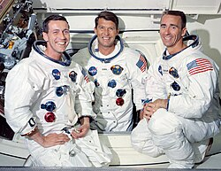
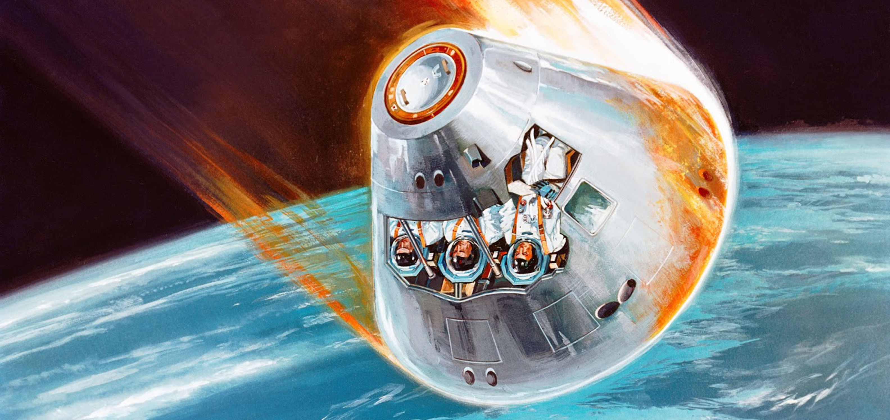
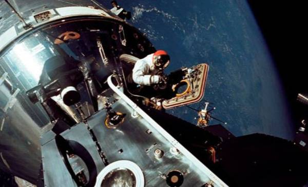
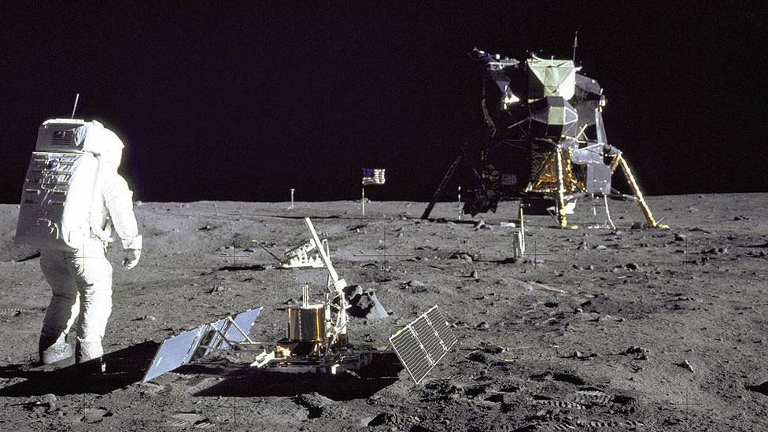
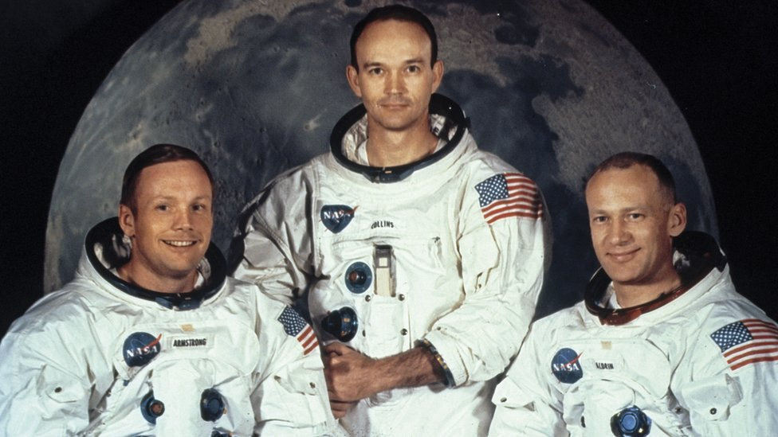
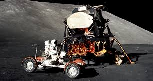

APOLO 7
Fue la séptima misión del programa estadounidense Apolo, lanzado el día 11 de octubre de 1968 mediante un cohete del tipo Saturno IB.

APOLO 8
La misión se inició el 21 de diciembre de 1968 y fue la primera misión tripulada en salir de órbita terrestre, llegar y orbitar a la Luna y finalmente regresar a la Tierra.

APOLO 9
Fue la tercera misión espacial tripulada en el programa Apolo de los Estados Unidos, la segunda en ser enviada en órbita por un cohete Saturno V.

APOLO 11
Fue la quinta misión tripulada del Programa Apolo de los Estados Unidos y la primera de la historia en lograr que un ser humano llegara a la Luna.

APOLO 13
Fue la séptima misión tripulada de la NASA y la tercera planeada para alunizar, abortada tras la explosión de un tanque de oxígeno en el módulo de servicio.

APOLO 17
Fue la última misión tripulada de la NASA a la Luna, marcando el fin del programa Apolo.